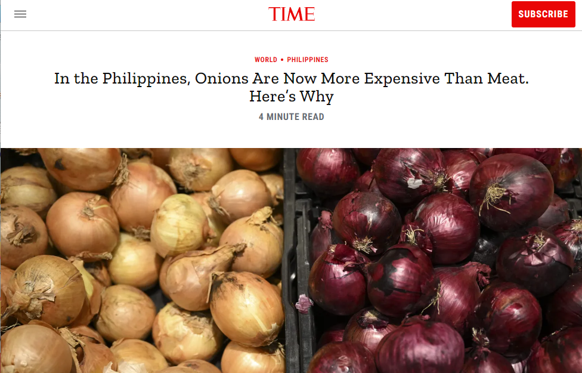

Overview
In 2023, TIME reported, "...as of Monday, Jan. 9, red and white onions in the Philippines were sold for as high as 600 pesos ($10.88) per kilogram,
or about $5 per pound, based on the agriculture department’s monitoring of Manila-area market prices.
That’s about three times as expensive as chicken and 25%-50% more expensive than pork or beef, according to the same market monitoring estimates.
The cost of a kilogram of onions is greater than the minimum wage for a day’s work in the Philippines."

This event sparked intrigue worldwide, having people ask, “What caused this?”.
The answer being the country reaching record 14-year-high levels of inflation, as well as a shortage of onions.
In the months following the incident, measures such as onion importing had to be taken to alleviate the issue.
If more situations such as this catch Filipinos by surprise, how would we be able to face it?
As such, the group has chosen to focus on the rise and variation of food prices in the Philippines, hoping to utilize data science to observe trends that might provide new information on the issue.
| Problem | The rising or unstable prices of common food items makes it difficult for Filipino families to afford food. |
|---|---|
| Solution | Our solution is to use data science to gain insights on the price increases or variation, analyze the trends of food prices in different regions in the Philippines over the years, and to determine whether the average incomes of Filipino households across the country are sufficient enough to afford the food items. |